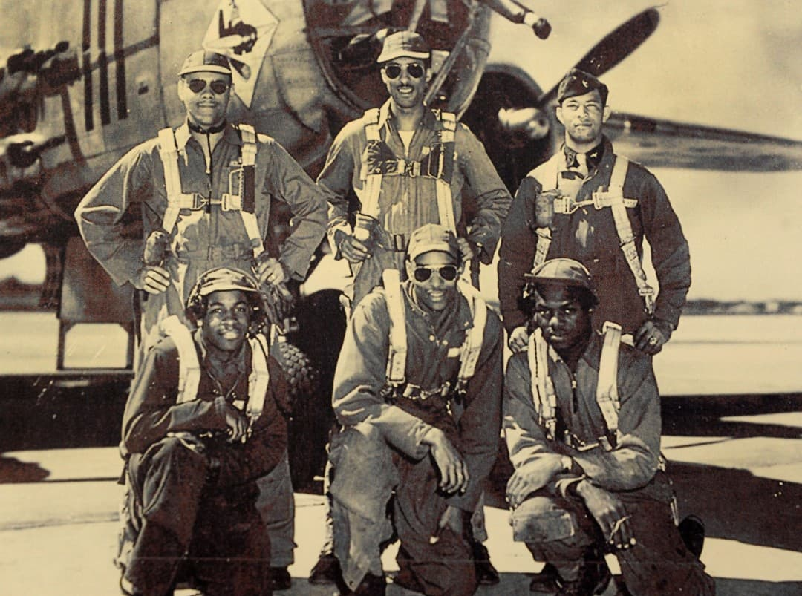
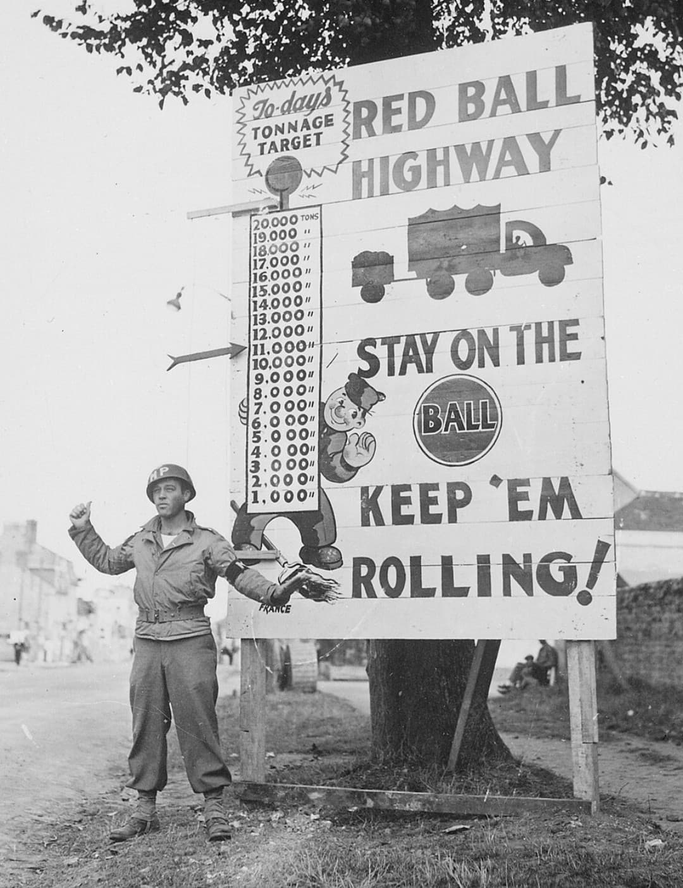
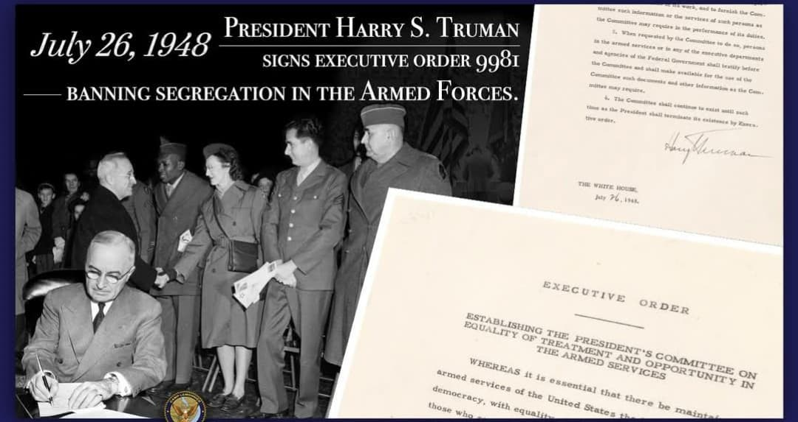

Le 26 juillet 1948, le président Harry S. Truman signe l’Executive Order 9981, un texte historique qui met fin à la ségrégation raciale dans les forces armées américaines. Cette décision est directement liée à la Seconde Guerre mondiale, durant laquelle les soldats afro‑américains ont servi dans des unités séparées malgré leur rôle essentiel dans l’effort de guerre.
L’ordre 9981 marque un tournant majeur dans l’histoire des États-Unis et ouvre la voie au mouvement des droits civiques qui transformera le pays dans les décennies suivantes.
De 1917 à 1945, l’armée américaine applique une politique officielle de séparation raciale. Les soldats noirs et blancs servent dans des unités distinctes, avec un commandement séparé et des rôles souvent limités pour les soldats afro‑américains.
Pendant la Seconde Guerre mondiale, les États-Unis combattent le régime nazi tout en maintenant une armée organisée selon des règles de ségrégation raciale. Ce paradoxe devient de plus en plus visible au fil du conflit.
Pendant la Seconde Guerre mondiale, cette ségrégation reste en vigueur. Les grandes divisions engagées dans le Débarquement du 6 juin 1944 – 1st Infantry Division, 4th Infantry Division, 29th Infantry Division, Rangers, 82nd et 101st Airborne – sont entièrement blanches.
Cette organisation explique l’absence de soldats noirs sur les photos des premières vagues du D‑Day.

Malgré la ségrégation, les soldats afro‑américains participent massivement à l’effort de guerre : logistique, artillerie antiaérienne, génie, construction, aviation et unités de chars.
Plusieurs unités afro‑américaines se distinguent par leur efficacité et leur courage :
Leur contribution devient un argument majeur contre la ségrégation militaire.

À la fin de la guerre, les vétérans afro‑américains réclament une reconnaissance pleine de leur service et l’égalité de traitement. Les associations de droits civiques se renforcent et les médias dénoncent la contradiction entre les valeurs défendues pendant la guerre et la réalité de la ségrégation intérieure.
L’armée américaine devient un enjeu central dans le débat sur les droits civiques.
Le 26 juillet 1948, le président Harry S. Truman signe l’Executive Order 9981. Ce texte proclame l’égalité de traitement et d’opportunités pour toutes les personnes servant dans les forces armées américaines.
L’ordre met fin à la ségrégation raciale dans l’armée, impose l’intégration des unités et ouvre la voie à la promotion de soldats afro‑américains à des postes de responsabilité.

L’application de l’Executive Order 9981 se fait progressivement, notamment pendant la guerre de Corée, où les unités intégrées deviennent la norme. Les régiments séparés disparaissent et l’armée américaine devient l’une des premières grandes institutions du pays à pratiquer une intégration réelle.
La fin de la ségrégation militaire influence directement la société civile américaine et contribue à renforcer le mouvement des droits civiques.
Page du Musée HOP WW2 – Section États-Unis & Droits civiques